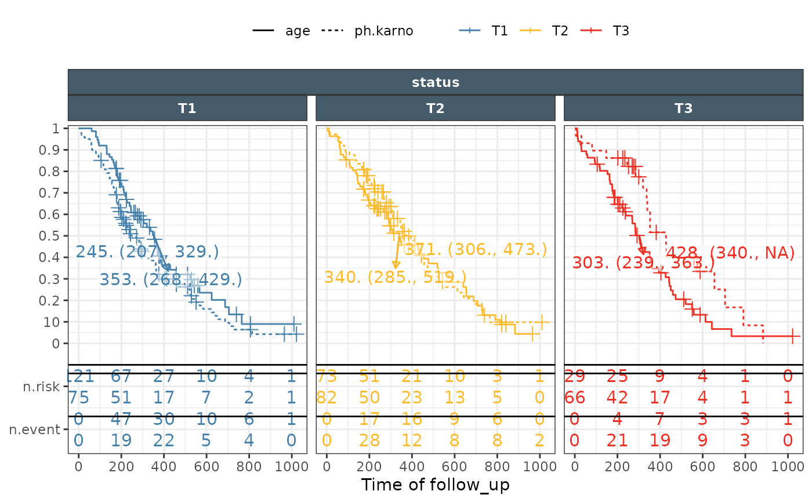
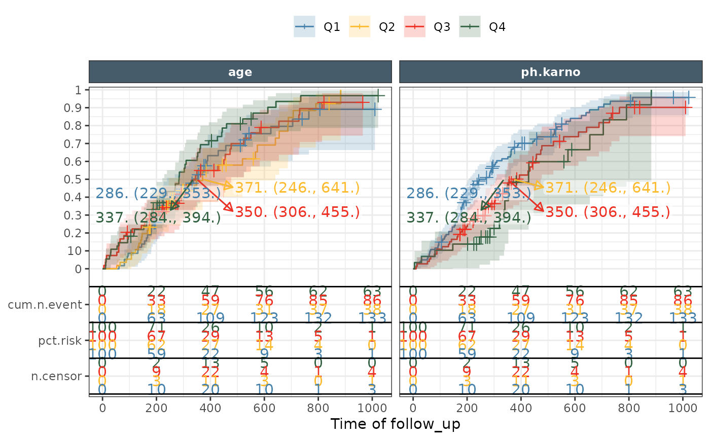

Produces a km plot with a facettable risk table in ggplot2
Usage
ggkmrisktable(
data = lung_long,
time = "time",
status = "DV",
endpoint = "Endpoint",
groupvar1 = "Endpoint",
groupvar2 = "expname",
groupvar3 = "none",
exposure_metrics = c("age", "ph.karno"),
exposure_metric_split = c("median", "tertile", "quartile", "none"),
exposure_metric_soc_value = -99,
exposure_metric_plac_value = 0,
exposure_metric_soc_name = "SOC",
exposure_metric_plac_name = "Placebo",
show_exptile_values = FALSE,
show_exptile_values_pos = c("left", "right"),
show_exptile_values_textsize = 5,
show_exptile_values_order = c("default", "reverse"),
color_fill = "exptile",
linetype = "exptile",
xlab = "Time of follow_up",
ylab = "Overall survival probability",
nrisk_table_plot = TRUE,
nrisk_table_variables = c("n.risk", "pct.risk", "n.event", "cum.n.event", "n.censor"),
nrisk_table_breaktimeby = NULL,
nrisk_table_textsize = 4,
nrisk_position_scaler = 0.2,
nrisk_position_dodge = 0.2,
nrisk_offset = 0,
nrisk_filterout0 = FALSE,
km_logrank_pvalue = FALSE,
km_logrank_pvalue_pos = c("left", "right"),
km_logrank_pvalue_textsize = 5,
km_logrank_pvalue_cutoff = 0.001,
km_logrank_pvalue_digits = 3,
km_trans = c("identity", "event", "cumhaz", "cloglog"),
km_linewidth = 1,
km_ticks = TRUE,
km_band = TRUE,
km_conf_int = 0.95,
km_conf_type = c("log", "plain", "log", "log-log", "logit", "none"),
km_conf_lower = c("usual", "peto", "modified"),
km_median = c("none", "median", "medianci", "table"),
km_median_table_pos = c("left", "right"),
km_median_table_order = c("default", "reverse"),
km_yaxis_position = c("left", "right"),
facet_formula = NULL,
facet_ncol = NULL,
facet_strip_position = c("top", "top", "top", "top"),
theme_certara = TRUE,
return_list = FALSE
)Arguments
- data
Data to use with multiple endpoints stacked into time, status, endpoint name
- time
name of the column holding the time to event information default to
time- status
name of the column holding the event information default to
DV- endpoint
name of the column holding the name/key of the endpoint default to
Endpoint- groupvar1
name of the column to group by, default
Endpoint- groupvar2
name of the column to group by in addition to groupvar1, default
expname- groupvar3
name of the column to group by in addition to groupvar1 and groupvar2, default "none"
- exposure_metrics
name(s) of the column(s) to be stacked into
expnameexptileand split intoexposure_metric_split- exposure_metric_split
one of "median", "tertile", "quartile", "none"
- exposure_metric_soc_value
special exposure code for standard of care default -99
- exposure_metric_plac_value
special exposure code for placebo default 0
- exposure_metric_soc_name
soc name default to "soc"
- exposure_metric_plac_name
placebo name default to "placebo"
- show_exptile_values
FALSE
- show_exptile_values_pos
"left" or "right"
- show_exptile_values_textsize
default to 5
- show_exptile_values_order
the order of the entries "default" or "reverse"
- color_fill
name of the column to be used for color/fill default to
exptile- linetype
name of the column to be used for linetype default to
exptile- xlab
text to be used as x axis label
- ylab
text to be used as y axis label
- nrisk_table_plot
TRUE
- nrisk_table_variables
one or more from: "n.risk", "pct.risk", "n.event, "cum.n.event, "n.censor"
- nrisk_table_breaktimeby
NULL
- nrisk_table_textsize
4
- nrisk_position_scaler
0.2
- nrisk_position_dodge
0.2, negative values will reverse the order
- nrisk_offset
0
- nrisk_filterout0
FALSE
- km_logrank_pvalue
FALSE
- km_logrank_pvalue_pos
"left" or "right"
- km_logrank_pvalue_textsize
pvalue text size default to 5
- km_logrank_pvalue_cutoff
pvalue below which to print as p < cutoff
- km_logrank_pvalue_digits
pvalue ndigits for round function
- km_trans
one of "identity","event","cumhaz","cloglog"
- km_linewidth
linewidth for the km curves default to 1
- km_ticks
TRUE
- km_band
TRUE
- km_conf_int
0.95
- km_conf_type
default one of "log", "plain", "log-log", "logit", "none"
- km_conf_lower
one of "usual", "peto", "modified"
- km_median
add median survival information one of "none", "median", "medianci", "table"
- km_median_table_pos
when table is chosen where to put it "left" or "right
- km_median_table_order
when table is chosen the order of the entries "default" or "reverse"
- km_yaxis_position
where to put y axis on "left" or "right
- facet_formula
facet formula to be used otherwise ~ groupvar1 + groupvar2 + groupvar3
- facet_ncol
NULL if not specified the automatic waiver will be used
- facet_strip_position
position in sequence for the variable used in faceting default to c("top","top","top","top")
- theme_certara
apply certara colors and format for strips and default colour/fill
- return_list
What to return if True a list of the datasets and plot is returned instead of only the plot
Examples
library(tidyr)
# Example 1
lung_long <- survival::lung |>
dplyr::mutate(status = ifelse(status==1,0,1)) |>
tidyr::gather(Endpoint,DV,status) |>
dplyr::filter(!is.na(ph.karno))|>
dplyr::filter(!is.na(pat.karno))|>
dplyr::filter(!is.na(ph.ecog))
lung_long$ph.ecog <- ifelse(lung_long$ph.ecog>1,2,lung_long$ph.ecog)
lung_long$ph.ecog <- as.factor(lung_long$ph.ecog )
lung_long$ph.ecog <- as.factor(lung_long$ph.ecog )
lung_long$facetdum <- "(all)"
ggkmrisktable(data = lung_long, time= "time", status ="DV",
exposure_metrics =c("age","ph.karno"),
exposure_metric_split = "tertile",
color_fill = "exptile",
linetype = "expname",
groupvar1 = "Endpoint",
groupvar2 = "exptile",
xlab = "Time of follow_up",
ylab ="Overall survival probability",
nrisk_table_variables = c("n.risk","n.event"),
km_median = "medianci",
km_band = FALSE,
nrisk_table_breaktimeby = 200,
facet_ncol = 3)
#> Warning: Using `size` aesthetic for lines was deprecated in ggplot2 3.4.0.
#> ℹ Please use `linewidth` instead.
#> ℹ The deprecated feature was likely used in the ggpubr package.
#> Please report the issue at <https://github.com/kassambara/ggpubr/issues>.
#> Warning: The `position` argument in `strip_split()` is being recycled to match the length of the facetting variables, as provided in the `facets`, `rows`, or `cols` arguments in the facet function.

#Example 2
ggkmrisktable(data = lung_long, time= "time", status ="DV",
exposure_metrics =c("age","ph.karno"),
exposure_metric_split = "quartile",
color_fill = "exptile",
linetype = "none",
groupvar1 = "Endpoint",
groupvar2 = "exptile",
xlab = "Time of follow_up",
ylab ="Overall survival probability",
nrisk_table_variables = c("cum.n.event","pct.risk","n.censor"),
km_median = "medianci",
km_band = TRUE,
km_trans = "event",
show_exptile_values = TRUE,
show_exptile_values_pos = "right",
nrisk_table_breaktimeby = 200,
facet_ncol = 3,
facet_formula = ~expname)
#> Warning: The `position` argument in `strip_split()` is being recycled to match the length of the facetting variables, as provided in the `facets`, `rows`, or `cols` arguments in the facet function.

if (FALSE) { # \dontrun{
#Example 3
ggkmrisktable(data = lung_long, time = "time", status = "DV",
exposure_metrics =c("ph.karno","pat.karno"),
exposure_metric_split = "median",
color_fill = "exptile",
linetype = "exptile",
groupvar1 = "Endpoint",
groupvar2 = "expname",
xlab = "Time of follow_up",
ylab ="Overall survival probability",
nrisk_table_variables = c("n.event"),
km_trans = "event",
km_median = "table",
km_median_table_pos = "right",
km_logrank_pvalue = TRUE,
km_logrank_pvalue_cutoff = 0.0001,
km_logrank_pvalue_digits = 3,
km_band = TRUE,
nrisk_table_breaktimeby = 200,
facet_ncol = 3,
facet_formula = ~expname)
#Example 4
ggkmrisktable(data=lung_long,
exposure_metrics = c("ph.karno","age"),
exposure_metric_split = "median",
time = "time",
status ="DV",
color_fill = "ph.ecog",
linetype = "ph.ecog",
groupvar1 = "Endpoint",
groupvar2 = "expname",
groupvar3 = "exptile",
nrisk_filterout0 = FALSE,
nrisk_table_breaktimeby = 200,
km_logrank_pvalue = TRUE,
km_median = "table",
km_median_table_pos = "left",
facet_formula = ~expname+exptile)
#Example 5
ggkmrisktable(data=lung_long,
exposure_metrics = c("ph.karno","age"),
exposure_metric_split = "none",
color_fill = "none",
linetype = "none",
nrisk_table_variables = c("n.risk", "pct.risk", "n.event", "cum.n.event", "n.censor"),
km_median = "table",
nrisk_position_scaler = 0.1
)
} # }